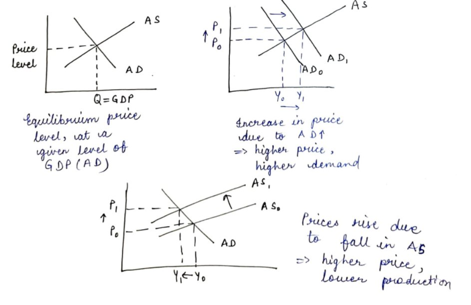
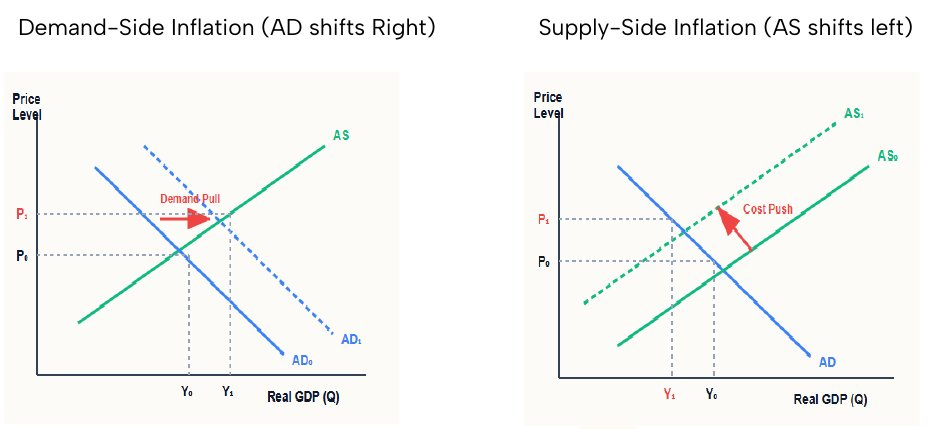

The handout says the base year in inflation gives a constant basket, as in the Real GDP chapter it gives constant prices.
Economy · GS Foundation · Chapter 6
Inflation: Causes, Measurement, Effects and Control
Handout only: no class slidesHandout pages 1-16No PYQs quoted
Price versus price level, AD and AS, demand-pull and cost-push causes, how inflation is measured and indexed, CPI and WPI, the 2024 base-year CPI, headline, core and skewflation, hyperinflation, stagflation and the Phillips curve, who gains and loses, fiscal drag, and why control works through the cost of money.
Chapter map#
- Inflation
What it is
- General rise in price level
- Price vs prices AD and AS
- Normative basket
Causes
- Demand-pull: AD right income, easy money, spending, population
- Cost-push: AS left raw materials, wages, EODB, disasters
- Cartels, hoarding, black money
- International shocks
Measurement
- Base year 100 index
- Y-o-Y, same month
- Example 10%; index 165 = 65% up
Indices
- CPI (NSO, MoSPI)
- CPI-AL, CPI-IW (Labour Bureau)
- WPI (OEA, DPIIT)
- 2024=100: 12 divisions, 358 items
Terms
- Headline = CPI-C, 4% ± 2%
- Core = minus food and fuel
- Skewflation
- Structural
- Disinflation vs deflation
Stagnation side
- Recession: 2 quarters
- Depression
- Stagflation breaks Phillips Curve
- Reflation
Effects
- RIR = NIR − inflation
- Borrowers gain; depositors lose
- Engel’s Law: poor hit most
- Fiscal drag
Control
- Make money expensive
- Interest rate up
- AD falls
Exam lens: priority and PYQs#
What the handout stresses
| Signal in the handout | Where | Why it matters |
|---|---|---|
| Inflation is a rise in the price level, not in one price. Prices rise when AD exceeds AS | Sections 1-2 | The base of every cause and every cure |
| Index = (100 ÷ base-year basket price) × current basket price. Inflation = % change over the same month of the previous year | Section 4 | Worked numbers (₹10,000 → ₹15,000 → ₹16,500) |
| The new 2024 = 100 CPI series (released Feb 2026): 12 divisions, COICOP 2018, food weight 36.75%, 358 items, e-commerce data | Section 5 | Recent changes; a likely current-affairs hook |
| Headline = CPI-C, target 4% ± 2%, adopted for inflation targeting in 2015; Urjit Patel Committee 2014 | Section 6 | Facts and dates |
| Core inflation: headline minus food and fuel; petrol and diesel stay inside core | Section 6 | A classic trap |
| Stagflation breaks the Phillips Curve (A.W. Phillips, UK 1861-1957) | Section 7 | Concept plus author |
| Fiscal drag: inflation pushes workers into higher tax brackets; an automatic stabiliser | Section 9 | Worked table (₹9 L → ₹10.8 L) |
| Real interest = nominal interest − inflation (RIR = NIR − Inflation) | Section 8 | Borrowers gain, lenders and depositors lose |
1 · What inflation is, and what it is not#
Inflation is a general rise in prices or the price level. A rise in the price of one good may cause inflation but is not inflation by itself. People feel inflation when the overall value of the basket they buy goes up. Each person has a different basket, so the experience differs (the handout asks how an agricultural labourer in Odisha feels it versus a new joiner in a Bengaluru startup).
- Price is the value at which a single good is exchanged, set by that good’s demand and supply.
- Prices (the price level) are set by Aggregate Demand (AD) and Aggregate Supply (AS).
- We cannot measure inflation for each person. We track a normative basket reflecting the consumption pattern of a specific group.
2 · AD, AS and the price level#
Aggregate Demand versus Aggregate Supply
| Aggregate Demand (AD) | Aggregate Supply (AS) | |
|---|---|---|
| Meaning | Total demand for all goods and services in the economy, which domestic producers are required to meet | Total supply of all goods and services, what all producers produce combined |
| Depends on | General price level; incomes; spending habits (culture of spending); availability of money (easy loans); size of population | General price level; availability of basic raw materials (coal, iron, oil); skill level of the population; investment in infrastructure, capital goods and R&D |
| Link to price level | Inversely related: if things become expensive, people demand less | Rises with price level: producers have an incentive to produce more (but inputs eventually run out) |


3 · Causes of inflation#
Demand and supply factors of any good split into specific factors (taste for ice cream) and general factors (size of population, income levels, availability of money). Causes of inflation are the general factors that shift AD or AS, not the factors of one good.
Demand-side versus supply-side inflation
| Demand-pull (AD shifts right) | Cost-push (AS shifts left) | |
|---|---|---|
| Trigger | Anything that raises AD | Anything that lowers AS or restricts production |
| Examples | Rising income levels; easy money (lower interest rates, cheaper credit); more government spending; rising population; changing spending habits (less saving, more consumption, usually a secondary effect of higher incomes) | Rising cost or non-availability of basic raw materials (crude, metals, coal); higher cost of factors of production (wages, interest on capital); low investment (poor infrastructure, no capital goods, poor R&D); falling productivity or failure to adopt new skills; poor Ease of Doing Business (compliance, contract enforcement, weak entrepreneurship culture); frequent disasters disrupting supply chains |
Other factors named in the handout:
- Legal and market distortions: cartelisation (producers collude to act as a monopoly), hoarding (artificial scarcity), widespread black money (untracked cash).
- International shocks: geopolitical tension, war, trade sanctions, disasters, especially in countries we import heavily from (oil producers).
4 · Measuring inflation and the idea of an index#
Inflation is the percentage change in prices in the current period over the previous period. It is usually reported year-on-year (Y-o-Y): the current month against the same month of the previous year.
- Identify the target group.
- Construct a normative basket of goods and services for an average person in that group.
- Choose a base year. The basket is built separately for each month to account for seasonality. The importance of each item is its weight (% of total expenditure). Most items stay, some enter and exit, and some weights change.
- Collect the prices of the items for each month of the base year to get the basket’s total price.
- Collect the prices for the corresponding months of later years to get the new basket price.
- Inflation = % change in the basket price in a month of this year over the same month of last year.
- Communicate the index value along with the % change over the year.
5 · Indexing: why, and a worked example#
If the government only said “prices are 4.3% higher than last year”, last year would become a moving benchmark. People need a fixed base. Also, the raw basket price (like ₹11,345 and ₹18,967) is a meaningless number for a normative basket. So the base-year basket price is set to a clean value, usually 100.
The handout’s example
| Period | Basket price | Index value |
|---|---|---|
| Base year (March 2015) | ₹10,000 | 100 |
| March 2025 | ₹15,000 | (100 ÷ 10,000) × 15,000 = 150 |
| March 2026 | ₹16,500 | (100 ÷ 10,000) × 16,500 = 165 |
- Inflation (March 2026 over March 2025) = (16,500 − 15,000) ÷ 15,000 × 100 = 10%.
- An index of 165 means prices are 65% higher than in the 2015 base year.
- The base year here gives a constant basket to compare the cost of living; in Real GDP the base year gives constant prices to value output.
6 · Indices in India and the 2024 base-year CPI#
Common inflation indices
| Index | Variants | Released by |
|---|---|---|
| CPI | CPI-Rural, CPI-Urban, CPI-Combined (CPI-C) | National Statistical Office (NSO) under MoSPI |
| CPI-AL and CPI-IW | Agricultural Labourers; Industrial Workers | Labour Bureau (Ministry of Labour and Employment) |
| WPI | Wholesale Price Index | Office of the Economic Adviser (OEA), Department for Promotion of Industry and Internal Trade (DPIIT), Ministry of Commerce and Industry |
- A working group chaired by Prof. Ramesh Chand was constituted to revise the WPI base year from 2011-12 to 2022-23, and to recommend a roadmap to switch from WPI to a Producer Price Index (PPI).
- India has no official PPI. So in 2017 WPI was adjusted to sit closer to basic prices / factor cost by removing indirect taxes, bringing it nearer to producers’ realised prices.
In Feb 2026 MoSPI released the new 2024 = 100 base-year series, a structural overhaul, not a routine weight change:
2012 series versus 2024 series (as given in the handout)
| Change | 2012 series | 2024 series |
|---|---|---|
| Breakup of “Miscellaneous” | 6 groups; a giant “Miscellaneous” bucket (doctor visits, bus fares, school fees) with 28.32% weight | 12 divisions under the UN COICOP 2018 framework; Transport, Health, Education and Communications tracked separately |
| Engel’s Law (food loses its crown) | Food and Beverages weight 45.86% | 36.75%. Food is volatile (onion, tomato spikes), so headline inflation should be less volatile and give the RBI a clearer demand signal |
| Digital and service economy | 299 items | 358 items. Removed: VCRs, tape recorders, CDs. Added: OTT subscriptions, pen drives, attendant/babysitter services, pet products. For the first time, prices scraped from 12 major e-commerce platforms; Rural House Rent introduced |
7 · Key terminology#
Headline, skewflation, core, structural
Types of inflation measure
| Term | Meaning in the handout | Notes and trap |
|---|---|---|
| Headline inflation | Overall inflation = CPI-C. What the news reports | Adopted as the primary anchor of Inflation Targeting in 2015. Shift from WPI to CPI-C recommended by the Urjit Patel Committee, 2014. Target set by the Monetary Policy Framework Agreement at 4%, tolerance ±2% |
| Skewflation | Inflation driven by a few items rising fast while most stay stable. “Skew” means bent or asymmetrical | Gained prominence in India around 2009-2010 (Economic Survey): onions and pulses spiked while manufactured goods stayed cheap |
| Core inflation | Headline minus highly volatile items (food and fuel) that authorities cannot immediately control. Also non-food, non-fuel inflation | NSO calculates headline; food and fuel are removed to reach core; RBI calculates the value. Petrol and diesel for vehicles are inside core (under Transport and Communication within Miscellaneous), not in “Fuel and Light”; their prices are controlled through taxation |
| Super core / refined core | Headline minus food, fuel, petrol, diesel and precious metals | Truest picture of underlying demand |
| Structural inflation | Caused by structural features (poor infrastructure, bad EODB, skill deficits, supply-chain bottlenecks) that take long to fix | Handout example: political complexity blocks agriculture supply-chain reform, so the current system stays inherently inflationary |
Hyperinflation, deflation, disinflation
- Hyperinflation: runaway, exceptionally high inflation (galloping, trotting). Costs: shoe-leather costs (running to the bank before money loses value) and menu costs (constantly updating prices).
- There is no consensus on the criteria separating high from hyper. Phillip Cagan: more than 50% per month. Examples: Weimar Germany (1923), Zimbabwe (2008). It is commonly understood as the rate beyond people’s normal capacity to bear: the US normal is 1-2%, so 6% looks “hyper” there; India’s normal over two decades is 5-6%, so even 9% is “high”, not “hyper”; Turkey has had 80-100%.
- Deflation: a fall in prices (negative inflation). Disinflation: a fall in the rate of inflation; prices still rise, but slower, largely a result of base effect. Continued disinflation may become deflation.
- Japan is the famous modern deflation example: “Lost Decades” since the 1990s; consumers delayed purchases expecting cheaper goods tomorrow.
Recession, depression, shrinkflation
Contraction terms
| Term | Meaning | Note |
|---|---|---|
| Recession | Contraction in output for two consecutive quarters | A rule of thumb. The US NBER looks at broader metrics (employment, industrial production, wholesale-retail sales) to declare one |
| Depression | Severe, prolonged contraction; the economy cannot get back to its original output | No objective criterion. Great Depression (1929): US GDP fell by nearly 30%, unemployment hit 25%. “A recession is a speed bump; a depression is a crater” |
| Shrinkflation | Size or quantity of a good shrinks while the packet price stays the same | Rampant in FMCG. Handout examples: Parle-G, Maggi cutting grammage to hold the ₹5 or ₹10 price point |
8 · Spirals, stagflation and the Phillips Curve#
- Price-wage spiral: prices rise, workers demand higher wages, firms pass the wage cost to consumers, a continuous positive feedback loop.
- Inflation expectations: a self-fulfilling prophecy. If people expect prices to rise, panic-buying today creates shortages and prices actually rise.
- Reflation: the government induces inflation (stimulus cheques, tax cuts, lower interest rates) to boost AD and reduce unemployment after a recession or deflation.
Normally there is a trade-off: fast growth (low unemployment) comes with high inflation, and slow growth (high unemployment) comes with low inflation. This comes from the Phillips Curve: A.W. Phillips studied the UK from 1861 to 1957 and found an inverse relation between inflation (wage growth) and unemployment. Points where both were low, or both high, were outliers; the both-high points are the periods of stagflation.
- If inflation is very high, unemployment is probably low, so the policy maker will pay the price of a slight rise in UE to cut inflation. If UE is very high, prices are probably low, so a rise in prices is a bearable cost to cut UE.
- Stagflation breaks the Phillips Curve: pursuing either goal worsens the other, which creates policy uncertainty and paralysis.
9 · Effects of inflation#
Time value of money and real return
Inflation erodes money’s value. If ₹100 bought 1 kg of apples and apples now cost ₹110, ₹1 has gone from 1/100 kg to 1/110 kg. With 10% inflation, ₹110 this year buys what ₹100 bought last year. Someone with ₹105 is nominally richer but poorer in real terms. You need exactly inflation% extra to keep your worth.
Who gains and who loses
| Group | Effect | Why |
|---|---|---|
| Borrowers | Benefit | Inflation eats into the lender’s return and helps shoulder the borrower’s burden |
| Lenders (banks) | Lose, unless protected | Banks protect themselves by (a) charging a high NIR that stays above inflation, or (b) using a floating rate: RIR fixed, NIR = RIR + inflation |
| Depositors | Lose | They are lenders to banks with no bargaining power. Deposit rates (the handout says a meagre 2-3%) do not beat inflation, so the real return is generally negative. Even fixed deposits hardly beat inflation. This does not mean keep cash at home: cash loses value at the rate of inflation |
| Consumers | Lose | Money loses purchasing power |
| Producers | Generally benefit | Depends on pricing power: necessities have inelastic demand but more competition; luxuries have elastic demand but less competition. Most producers can pass on the rise, so profit margins expand |
10 · Is inflation desirable? Engel’s Law and the poor#
As a consumer you might prefer deflation, but a healthy economy needs low and stable inflation. Low inflation within people’s tolerance keeps producers profitable so they invest, expand capacity, pay higher wages and create jobs. Stability brings predictability and stops people delaying decisions.
11 · Fiscal drag: how inflation cools itself#
In inflation the government collects more direct and indirect taxes. Indirect taxes are mostly ad valorem (on the value of goods), so the same rate collects more. Direct taxes: a worker who negotiates a raise equal to inflation is pushed into a higher bracket under progressive taxation.
The handout’s hypothetical (inflation 20%)
| Income ₹9 L | Income ₹10.8 L (+20%) | |
|---|---|---|
| Slabs (hypothetical) | 0-5 L at 10%; 5-10 L at 15%; 10-30 L at 20%; 30 L+ at 25% | Same slabs |
| Tax | ₹50,000 on first 5 L + ₹60,000 on next 4 L = ₹1.1 L | ₹50,000 + ₹75,000 on next 5 L + ₹16,000 on next 80k = ₹1.41 L |
| Disposable income | 9 − 1.1 = ₹7.9 L | 10.8 − 1.41 = ₹9.39 L |
| Change | Post-tax income up 18.8% | Tax outgo up 28.2% |
Nominal income rose by the full inflation rate (20%), but real disposable income rose only about 18-19%. People pay a larger share of their increment as tax. No new tax was imposed; the system does it automatically. People realise they are poorer, cut spending, AD falls and prices cool without the government acting. This automatic cooling is fiscal drag, acting as an automatic stabiliser.
12 · Controlling inflation: why “make money expensive”#
- Two problems: (1) identifying the cause (price is the collective outcome of many intertwined factors); (2) the ability to fix it (you cannot build roads and ports, or attract capital, in a year). Structural fixes (infrastructure, import resilience, EODB) are necessary but come too late. The solution must be effective and agnostic of the cause.
- Inflation is a consequence of AD exceeding AS. Bring down AD and prices cool. AD is expenditure using money. If money becomes expensive, people hold on to it and spend less.
- The cost of money is the interest rate (a loan of ₹1 lakh at 8%). Raise it from 8% to 10%: those with money save it for the higher interest, those without cannot afford to borrow. Both reduce demand, AD cools and prices fall.
- The price of money, like any price, depends on its demand and supply. Reduce the supply of money and its cost rises. Who does this and how is the next chapter: money, its demand and supply, and monetary policy.
The handout’s logic for controlling inflation
AD exceeds AS
Prices rise
Raise the cost of money
Interest rate up (8% → 10%)
Savers save, borrowers borrow less
Spending falls
AD falls
Prices cool
Timeline and numbers#
- A.W. Phillips studies UK data for the Phillips Curve (inverse relation between inflation (wage growth) and unemployment).
- Weimar Germany: the handout’s hyperinflation example.
- Great Depression: US GDP fell by nearly 30%, unemployment 25%.
- Zimbabwe: hyperinflation example.
- Skewflation prominent in India (onions, pulses).
- Urjit Patel Committee recommends CPI-C as headline instead of WPI.★
- CPI-C adopted as the primary anchor for the Inflation Targeting framework.★
- WPI adjusted: indirect taxes removed so it sits closer to basic prices / factor cost.
- MoSPI releases the new 2024 = 100 CPI base-year series.★
Connects to#
The Phillips Curve and stagflation link inflation to unemployment; ch3 covers NAIRU and cyclical unemployment.
Necessary versus luxury goods (elasticity) decide the producer’s pricing power; normal versus inferior goods connect to Engel’s Law.
The handout ends by turning to money, its demand, supply and monetary policy: the cure for inflation.
Budget and Fiscal Policy handout
Government spending drives AD; fiscal drag works through tax brackets.
Recall sheet#
Read once, hide it, then rebuild the chapter from memory.
- Inflation = rise in price level (not one price). Prices rise when AD exceeds AS. Demand-pull: AD right. Cost-push: AS left.
- Index = 100 ÷ base price × current price. Example: 10,000 → 15,000 → 16,500: index 150, 165; inflation 10%.
- CPI by NSO (MoSPI); CPI-AL, CPI-IW by Labour Bureau; WPI by OEA (DPIIT). 2024=100 series: 12 divisions, 358 items, food 36.75% (was 45.86%), Miscellaneous was 28.32%.
- Headline = CPI-C; target 4% ± 2%; adopted 2015; Urjit Patel Committee 2014. Core = minus food and fuel; petrol and diesel stay in core.
- Disinflation: rate falls, prices still rise. Deflation: prices fall. Recession: 2 quarters. Depression: severe and prolonged.
- Stagflation: low growth + high inflation; breaks the Phillips Curve (Phillips, UK 1861-1957).
- RIR = NIR − inflation. Borrowers gain; lenders and depositors lose. Engel’s Law: the poor are hit hardest.
- Fiscal drag: higher bracket, more tax, AD falls: an automatic stabiliser.
- Control: raise the cost of money (interest rate), AD falls, prices cool.
- Blank page: draw AD-AS with AD shifting right, then AS shifting left, and label the new price level.
Test yourself#
Practice questions below are written from the handout. They are not past-year questions.
Quick quiz
0 / 0 correct
Mains practice: answer skeletons
Try the answer on a blank page first, then open the skeleton.
Distinguish between a rise in a price and inflation. What causes inflation?
Intro: Inflation is a general rise in the price level, not a rise in one good’s price.
- Prices rise when AD exceeds AS.
- Demand-pull: rising incomes, easy money, government spending, population, spending habits.
- Cost-push: raw material costs, wages, low investment, poor EODB, disasters.
- Other: cartels, hoarding, black money, international shocks.
Closing line: The causes to look for are the general factors that shift AD or AS.
How is inflation measured in India? Discuss the recent changes in measurement.
Intro: A normative basket is tracked against a base year and converted to an index.
- Steps: target group, basket and weights, base year, prices, year-on-year change.
- CPI (NSO), CPI-AL and CPI-IW (Labour Bureau), WPI (OEA).
- Headline = CPI-C, target 4% ± 2%, Urjit Patel Committee 2014.
- 2024 = 100 series: 12 divisions (COICOP 2018), food weight 36.75%, 358 items, e-commerce data, rural house rent.
Closing line: A lower food weight should give a less volatile and clearer signal for monetary policy.
Why does inflation hurt the poor more? Explain with Engel’s Law.
Intro: Engel’s Law says the share of income spent on food falls as income rises.
- A poor household spends most of its budget on necessities like food.
- Food prices are volatile and producers can pass them on.
- No buffer or luxury spending to cut.
- Deposit returns of the poor are generally negative in real terms.
Closing line: Inflation is a regressive burden.
Explain stagflation and why it creates a policy dilemma.
Intro: Stagflation is low growth, high unemployment and high inflation together.
- Normally the Phillips Curve gives a trade-off.
- Policy maker normally pays a small price in one to fix the other.
- In stagflation both are adverse; fighting one worsens the other.
- Result is policy uncertainty and paralysis.
Closing line: Stagflation breaks the trade-off that policy relies on.
What is fiscal drag? How does it act as an automatic stabiliser?
Intro: In inflation nominal incomes rise, pushing people into higher tax brackets.
- Worked example: ₹9 L to ₹10.8 L; tax up 28.2%, post-tax income up 18.8%.
- Indirect taxes are ad valorem, so collections rise.
- People feel poorer, cut spending, AD falls.
- No new tax and no government action needed.
Closing line: The tax system cools inflation automatically.
Flashcards
Tap the card to flip.